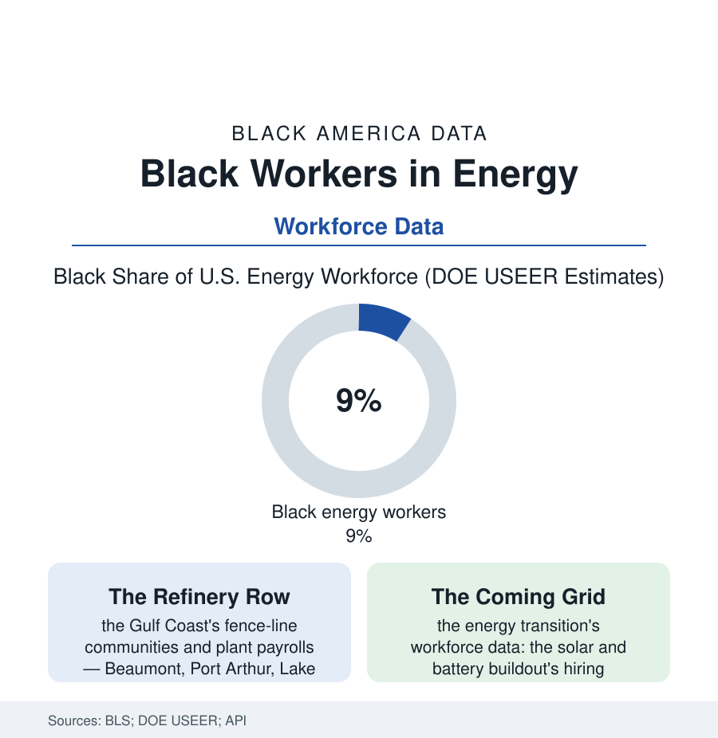

Black Employment
Black Workers in Energy: Refineries, Rigs, and the Grid
From the Gulf Coast refinery rows to the utility line crews, Black energy workers hold a hard-won share of America's best-paying blue-collar industry. The energy file.

Energy is the American industry's pay summit — refinery operators, line workers, and plant technicians at the top of the blue-collar wage tables — and Black workers' place in it was built the hard way: through the Gulf Coast's refinery gates, the union halls of the oil workers, and the utility companies' postwar hiring, into a workforce the Department of Energy's annual census puts at roughly nine percent Black against a product every household in this atlas consumes. This article reads the energy file.
The Refinery Century
The industry's Black geography is a fence-line map: the Texas and Louisiana Gulf (Spindletop's 1901 gusher and the refinery rows that followed — Beaumont, Port Arthur, Houston's ship channel, the Baton Rouge-to-New Orleans corridor — drawing Black workers from the same East Texas and Louisiana parishes as the Delta file's exodus, into plant towns where the refinery was both the best employer and the air itself), the Midwest's refinery cities (Gary's neighbor Whiting, Toledo, Detroit's Marathon fence), and the oilfields' roughneck fringe, where the historical record thins (the boomtown camps' segregation the worst-documented in the employment files). Inside the gates, the pattern was the era's standard architecture with the industry's own accent: the labor gangs and the janitorial crews Black, the operator and craft lines guarded — and the Oil, Chemical and Atomic Workers' union locals the lever, their Gulf Coast strongholds among the South's more genuinely interracial institutions in the labor histories, the postwar decades' grievances and the 1970s' consent-decree era cracking the operator lines as they cracked steel's. The wage data justify the fight in every decade: the refinery operator's pay at the industrial summit, the pensions and the overtime economy building the fence-line communities' paradoxical ledgers — the houses bought and the tuitions paid on plant money, in the same census tracts whose health data (the public-health file's asthma and cancer-cluster rows) record the exposure side of the bargain, the environmental-justice literature born, in no small part, in these zip codes' double entry.
The Transition's Workforce Question
The modern file is written by the industry's two simultaneous motions: the fossil core's persistence (the Gulf Coast's petrochemical buildout of the past decade — the largest construction programs in the industry's American history in the trade data, their craft-labor demand pulling a generation of Black welders, pipefitters, and scaffold builders through the union halls and the nonunion contractors alike, the building-trades file's energy chapter) and the replacement industry's assembly (the solar, wind, storage, and grid-modernization workforces of the DOE's annual USEER counts — growing at multiples of the overall energy rate, their Black shares in the early counts running below the legacy industry's, the apprenticeship and pre-apprenticeship pipelines of the clean-energy buildout deciding, in the current decade's hiring data, whether the new industry's demographics repeat the old one's founding exclusion or its hard-won correction). The utility tier runs between the two (the line crews and plant operators of the regulated monopolies — among the most stable, pensioned, and locally rooted jobs in the Black working class's portfolio in the workforce data, their utilities' diversity reports an annual public census), and the policy rows sit on top (the energy-transition legislation's labor standards and community-benefit requirements written, in part, with the fence-line file open on the drafters' desks — the first energy statutes in American history to treat the refinery row's Black neighborhoods as parties rather than scenery). The file's question is the employment section's in its purest current form: an entire industry is being rebuilt in one generation, and the hiring is happening now, in numbers the DOE publishes every year.
Reading the Energy Data
Nine percent of the industry that powers everything, concentrated where the product is made and its costs are breathed: the energy file holds the atlas's bargain in its rawwest form — the best wages in the blue-collar world, paid at the fence line. The transition now reprices the bargain for everyone's grandchildren at once. Whose names are on the new payrolls is a data series already running. The men and women who climbed the first industry's ladders left the map of where the ladders were; the new industry's builders would do well to start from it.
More in Black Employment
The Black Unemployment Rate: The Two-to-One Pattern
Black unemployment runs at roughly twice the White rate — 5.5 percent against 3.3 percent in annual averages — a ratio stable across five decades of federal data. How it is measured and why it persists.
Black Median Weekly Earnings: The 80-Cent Ratio
Black full-time workers earn a median of about $900 a week — roughly 80 cents for every dollar White workers earn. The BLS earnings data by group, gender, and occupation.
Black Labor Force Participation: Working at National Rates
Black labor force participation runs at roughly the national rate — and Black women participate at higher rates than White women. The BLS participation data.
Source: U.S. Bureau of Labor Statistics; U.S. Department of Energy workforce reports (USEER); American Petroleum Institute industry studies; Utility Workers Union records.